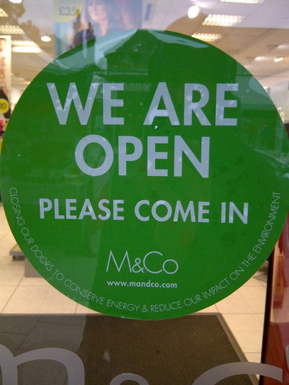

Superdrug starts trial of closed door policy
Posted by admin on October 23, 2013
Superdrug has begun a three month trial of a closed door policy in a few stores with the potential of rolling out the policy out to all their stores - to save energy, cut down air pollution within their high street shops, and improve the working conditions for staff. Not to mention making sure that we don't all have to pay for energy waste in the price of their goods.
BBC Radio broadcast and Air Quality Summit
Posted by admin on October 23, 2013
The campaign was in discussion on BBC Radio Cambridgeshire news broadcast live on Thursday 17/10 and again am on Friday 18/10 prime time following the energy price hikes.
Close the Door attended the Camden and Islington Air Quality Summit on 17/10.
See here for the radio broadcast - we're on about six minutes in.
New Close the Door group starts in Lichfield
Posted by admin on October 23, 2013
Close the Door has arrived in Lichfield, Staffordshire with a joint project between Low Carbon Lichfield and South Staffs College. 1st year business studies students will carry out the visits to retail shops over the next two months and use this as part of their coursework. Support has been received from the local council and the Lichfield Chamber of Trade.
Watershed weekend
Posted by admin on October 14, 2013
This weekend is a watershed - many shops have been delaying putting on the heating, due to the late Indian Summer in some parts of the UK, and also due to cost of energy (attention to which should make a difference to door policy too), but the heating time of year has arrived. Time to close doors where possible, support shops which have a good door policy wherever there's a choice, and if customers are feeling brave to ask for a door to be closed before handing over hard earned money - after all wasted energy costs are passed on.
Over the summer period there is little we can do on the high street as people generally relate better to energy waste in the cold season, so our energies since April have gone into head offices (promising developments at Superdrug, Whitbread group, Boots and more); into City councils and BID partnerships - particularly in London where encouragement from the GLA and Westminster CC stands out; we have also been engaging with landlords including British Land. Meanwhile new CtD groups are forming in Lichfield, Camden, Marylebone, City of London.
Thanks for all support from retailers and customers alike. We are working to ensure that many more retailers will join those who already have a responsible door policy - here's an example from the cold season earlier this year.

GreenQloud web hosting sponsorship
Posted by admin on April 13, 2013
The shared website hosting system we've been using for the last few years has been strugging recently. We shouldn't complain too much - using it effectively free for the campaign, as a campaign member donated hosting within an already paid-for account. While this served us well for many years, we upgraded to a new CMS (content management system) software during the recent site refresh. This means it's now much easier to upsite the website.
However, shared hosting just doesn't have enough oomph for the job. This has resulted in a website with performance that's unpredictable and often very slow. Really, the site needed more, and dedicated, capacity - and the way it's done is called "cloud computing". This is essentially a set of internet connected servers which anyone can rent a slice of.
The old setup did have one big advantage - energy efficiency. Because we were sharing a server with thousands of other websites, our share of emissions would have been tiny. But if we moved to standard cloud hosting (like that from Amazon and Rackspace), this would mean an increase in the campaign's carbon emissions. Reserving more computing power means consuming more electricity, because it lies idle much of the time.
That's a problem for us, because internet datacentres and the servers they contain are increasingly using huge amounts of non-renewable power, and are not always transparent about it. Greenpeace states in their recent report "How Clean is your Cloud?" (PDF) that "if the cloud were a country, it would have the fifth largest electricity demand in the world". That was based on numbers from way back in 2007 and the cloud has grown a lot since then. Even if we are a small website in the general scale of things, we don't want to contribute to CO2 emissions from dirty electricity.
This is where GreenQloud comes in. Their location in Iceland means they can utilise abundant, zero-emission, renewable geothermal and hydro power to power cloud servers. Also, maintaining the right air temperature is one of the biggest overhead energy costs for datacentres - racks of servers all humming away generate a lot of heat. Iceland's favourable climate conditions mean that "free cooling" using outside air can be used instead of the aggressive air cooling used by most data centres - much like a shop in a temperate climate can be cooled much of the time by opening the door to a pleasant breeze, instead of running the air con at full blast.
As a result, GreenQloud offer some of the most energy efficient and environmentally friendly hosting in the world, and you can be assured that you're not causing coal to be burnt just by reading this. Techies might want to check out more details of how they provide truly green computing.
Finally, high bandwidth and low latency internet pipes to the UK, where most of our visitors come from, completes the picture by boosting website performance compared to our old, US based hosting. All in all, GreenQloud is a perfect fit for us.
Fortunately, the lovely people at GreenQloud have helped out by donating us lots of dedicated capacity within their state-of-the-art compute cloud in Iceland. As a result of our move to GreenQloud, you should experience a faster, more responsive website. We certainly find it a lot easier doing our site edits and updates now!
Bala Kamallakharan, GreenQloud's CEO said:
"GreenQloud was started to reduce the Carbon emissions caused by the Information, Communication and Technology (ICT) industry and also to make the ICT industry more sustainable by using 100% renewable energy to power our Cloud offering. When we were approached by "Close the Door Campaign", we had no hesitation to support their Infrastructure needs. We believe in their values of reducing energy waste and sustainability."
We're delighted to have GreenQloud's support, and to support them in return. It's a great example of how, with creative thinking, it's possible to provide a better experience for everyone while reducing our impact on the environment.